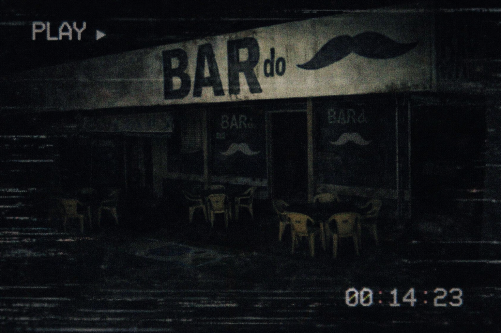

FRAGMENTO CORROMPIDO
Formas das nuvens, mochilas e risadas registradas em um canto. O Bar do Bigode aparece nos registros como um ponto de encontro pouco frequente, mas cheio de histórias.

Há anotações nas margens: "19/08 — Juntos a 13h" e um desenho minúsculo de um robozinho.
Bm0: Este arquivo é opcional — uma janela para memórias menores que ajudam a compor a pessoa por trás de N‑27.